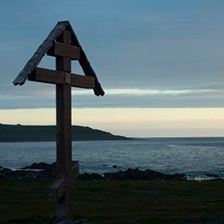
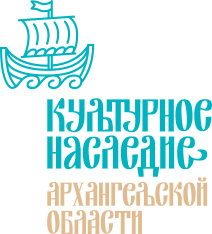

Спецпроект
Хронология событий. История культуры Архангельсого края
1690
Построен Троицкий собор на Ухт острове
Троицкий собор на Ухт-острове являлся главным сооружением каменного ансамбля Троицкого прихода и был образцом каменного зодчества VII века
1894
Издан сборник «Песни русского народа»
Песни русского народа собранные в губерниях Архангельской и Олонецкой в 1886 году слова записал Ф.М. Истомин
1934
Первое собрание северных художников
В Архангельске состоялось первое собрание северных художников, в котором приняли участие представители Великого Устюга, Вологды, Коми области

Этап 1. Поморский быт
Как был устроен поморский быт, какие семейные традиции сохранились до наших дней.
Ответь на 5 вопрос о поморском быте, традициях....
Ответь на 5 вопрос о поморском быте, традициях....
Спецпроект
История в картинках
Кино снимается в Архангельске
Praesent sollicitudin tortor nunc, non semper libero eleifend vitae. Fusce tempor efficitur nisl eget
Первый полярный художник
Praesent sollicitudin tortor nunc, non semper libero eleifend vitae. Fusce tempor efficitur nisl eget dictum. Curabitur vehicula tincidunt ligula
История одного художника
Praesent sollicitudin tortor nunc, non semper libero eleifend vitae. Fusce tempor efficitur nisl eget dictum. Curabitur vehicula tincidunt ligula

О проекте
Портал создаётся как региональный сетевой информационный ресурс, посвященный памятникам материальной и духовной культуры Архангельского Севера.
Главной целью проекта является популяризация знаний об истории и культуре Архангельского края и обеспечение эффективного ориентирования в этом богатейшем информационном пространстве.
Фестивали и праздники
В списке культурного наследия ЮНЕСКО
Культурный и исторический ансамбль «Соловецкие острова»
Свыше 200 памятников истории и культуры относятся к монастырскому периоду, который начался в первой половине XV в., когда монахами Зосимой и Германом в западной части Большого Соловецкого острова был основан монастырь.
Кенозерский национальный парк
Область покрыта смешанными сосново-еловыми лесами; здесь сохранилось около 5000 га малонарушенных первобытных таежных лесов. Здесь присутствует 322 вида позвоночных, включая 50 вида млекопитающих, 263 вида птиц, 4 вида пресмыкающихся и 5 видов амфибий. Многие из них не типичны для экосистем Русского Севера.
Полезные ссылки